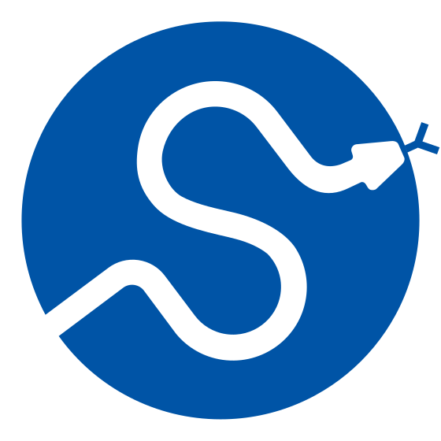

The task
Use EMG and knee-angle data to measure muscle activation during each repetition.
I built Python pipelines to analyse muscle activity and knee-angle recordings.

Prepared dataset results. New-athlete performance requires further validation.
Use EMG and knee-angle data to measure muscle activation during each repetition.
Cleaned signals, detected reps, extracted features and compared model baselines.
Per-repetition summaries and a repeatable pipeline, with the test results and limits documented below.
Built flexible loaders for inconsistent delimiters, headers and decimal formats. Cleaned and filtered EMG, then used the knee-goniometer channel to detect repetition boundaries. Computed activation metrics per repetition and extracted modelling features in 200 ms windows with a 50 ms hop.
Prepared test-set R²: RF 0.967, VM 0.959, BF 0.949, ST 0.915. MAE: 2.75, 2.80, 2.83 and 3.05 respectively, on the processed activation scale. The averages above describe that prepared dataset and split; they are not a guarantee for a new athlete or new hardware.
Next steps: collect MVC calibration, validate on new athletes and exercises, and add uncertainty estimates. This is an analytics foundation, not a medical or diagnostic product.
